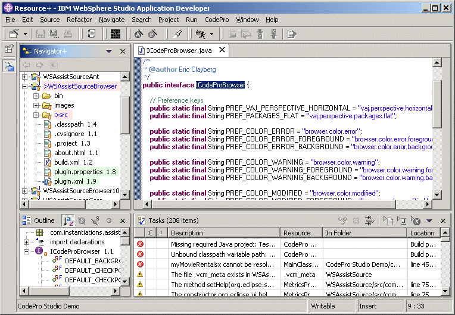

Resource+ PerspectiveThe Resource+ perspective is just like the standard Resource perspective except that it uses the COLOR-enhanced Navigator+ view rather than the standard Navigator view.  By default, modified elements are shown in blue and elements with errors are shown with a light red background. Optionally, elements with warnings can be highlighted with a light yellow background and elements modified since a specific checkpoint time can be highlighted with a light green background color. Options are provided via a preference page to set various foreground and background colors. |